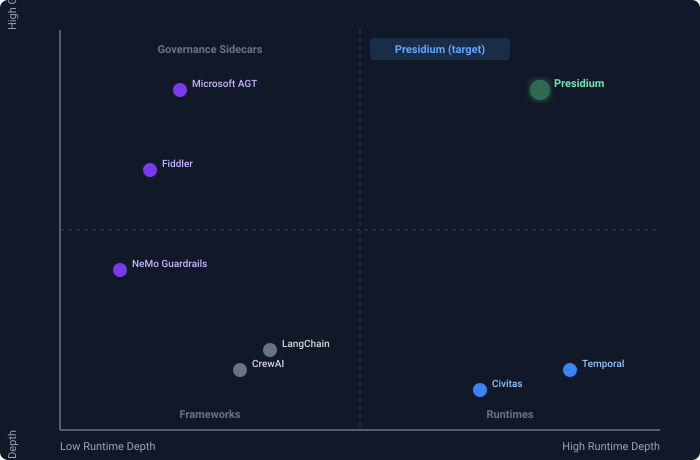

Market Positioning¶
Where Presidium sits in the agent infrastructure landscape.
The Landscape (April 2026)¶
Agent Runtimes¶
| Project | Funding | What It Does | Gap |
|---|---|---|---|
| Temporal | $300M, $5B valuation | Durable execution, workflow orchestration | No governance, no agent-native primitives |
| Civitas | OSS (solo maintainer) | OTP-style supervision, message passing, transports | No policy enforcement, no identity management |
| Inngest | $20M Series A | Serverless durable functions | No agent-specific features |
| Restate | $7M seed | Lightweight durable execution | Early stage, no governance |
Governance / Safety¶
| Project | Funding | What It Does | Gap |
|---|---|---|---|
| Microsoft AGT | Microsoft-backed | 10/10 OWASP coverage, policy engine, zero-trust identity | No runtime — sidecar only, 540K LOC complexity |
| Fiddler | $100M Series C | Observability, guardrails, Trust Models, compliance | No runtime — watches agents, doesn't run them |
| NVIDIA NeMo Guardrails | NVIDIA-backed | LLM input/output guardrails | Narrow scope — content safety only |
Agent Frameworks¶
| Project | Funding | What It Does | Gap |
|---|---|---|---|
| LangChain/LangGraph | $125M, $1.25B valuation | Agent building, orchestration, LangSmith observability | No fault tolerance, no governance |
| CrewAI | $18M Series A | Multi-agent orchestration with roles/goals | No supervision, no policy enforcement |
| OpenAI Agents SDK | OpenAI-backed | Agent building with tool calling | Minimal runtime, no governance |
The 2x2¶

Presidium occupies the only empty quadrant: deep runtime + deep governance.
Competitive Differentiation¶
vs. Microsoft AGT¶
| Dimension | AGT | Presidium |
|---|---|---|
| Architecture | Governance sidecar (bolt-on) | Governance built into runtime (native) |
| Complexity | 9 packages, 540K LOC, 5 languages | Single coherent platform, Python-only |
| Developer experience | Enterprise-first, complex setup | Developer-first, pip install presidium |
| Runtime | None — observes/constrains external agents | Full Civitas runtime (supervision, messaging) |
| Philosophy | "Secure what you've built" | "Build governed systems natively" |
| Vendor gravity | Azure integrations, Microsoft brand | Vendor-neutral, no cloud dependency |
vs. Fiddler¶
| Dimension | Fiddler | Presidium |
|---|---|---|
| Layer | Observability + safety (watches agents) | Runtime + governance (runs agents) |
| Buyer | Trust & Safety, Security teams | Platform Engineering, Agent developers |
| Deployment | SaaS — agents send data to Fiddler | Library — agents run on Presidium |
| Relationship | Complementary — Presidium generates telemetry, Fiddler analyzes it |
vs. Temporal¶
| Dimension | Temporal | Presidium |
|---|---|---|
| Model | Durable execution (workflow replay) | Actor model (supervision trees) |
| Agent-native | Retrofitted for agents | Built for agents from day one |
| Governance | None | Policy engine, registry, gateways |
| Infrastructure | Requires Temporal cluster | Runs in-process, scales to distributed |
| Pricing | Usage-based cloud service | OSS core + optional managed cloud |
Target Users¶
Primary: Agent Platform Engineers¶
Teams building internal agent platforms at companies with 5+ agents in production. They need: reliability, governance, observability, scaling — not another framework.
Secondary: Agent Developers¶
Individual developers building multi-agent systems who want supervision and governance without assembling 5 different tools.
Tertiary: Enterprise Security/Compliance¶
Teams evaluating agent infrastructure against OWASP, NIST AI RMF, EU AI Act. They need: audit trails, policy enforcement, compliance evidence.
Positioning Statement¶
For teams building production AI agent systems who need both reliability and governance, Presidium is the governed agent platform that provides fault-tolerant runtime and native policy enforcement in one architecture. Unlike governance sidecars (AGT) or runtime-only platforms (Temporal), Presidium makes governance architectural — policies are supervisor constraints, not external interceptors.